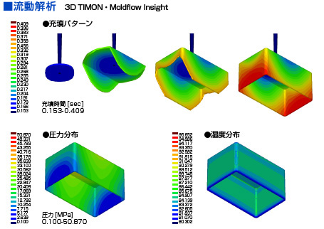

- HOME
- 金型設計
複雑な形状の金型設計も、安心してお任せください。
当社では三次元CAD（CAM、CAE）システムを活用し、お客様のニーズに合わせた金型設計を行っています。3D-CADを導入しているため、複雑な形状の製品でも最適なPL分割、入子分割の設定が可能。リードタイムを短縮することができます。
また設計の際は樹脂誘導解析を実施し、樹脂充填から成型後の反り・変形などのトラブルを検証します。そのため、成型時の問題・量産時の不良品発生を金型設計の段階で予測し、金型仕様の最適化を図ることが可能です。
金型試作（金属3D）
近年、さまざまな分野で導入が進み、活用されはじめているのが3Dプリンター技術です。プラスチック製品の製造、金型製作においても、3Dプリンター技術は従来のセオリーを根底から覆しかねない。そう言っても過言ではありません。
当社ではこうした3Dプリンター技術の可能性をいち早く取り入れるべく、樹脂3Dプリンターと金属3Dプリンターを相次いで導入しました。国内において、2種類の3Dプリンターを保有する製造メーカーはまだそう多くありません。現在当社では金属3Dプリンターを活用し、金型用パーツの試作を行っています。今後も新しい技術を積極的に取り入れながら、より高品質で、よりお客様のニーズに寄り添う製品の設計・製造を追求します。
樹脂流動解析（3D TIMON・Moldflow Insight）

樹脂流動解析では、設計した金型に樹脂を充填したとき、どのように樹脂が流動するのかをシミュレーションし、成型時の問題点などを検証します。当社では解析ツールとして3D TIMON、Moldflow Insightを導入しています。
これらのソフトを使った解析では、成型後の反りや変形まで予測することが可能です。成型・量産時の品質不具合を事前に防止できるため、品質面でのトラブル削減や納期短縮につながります。